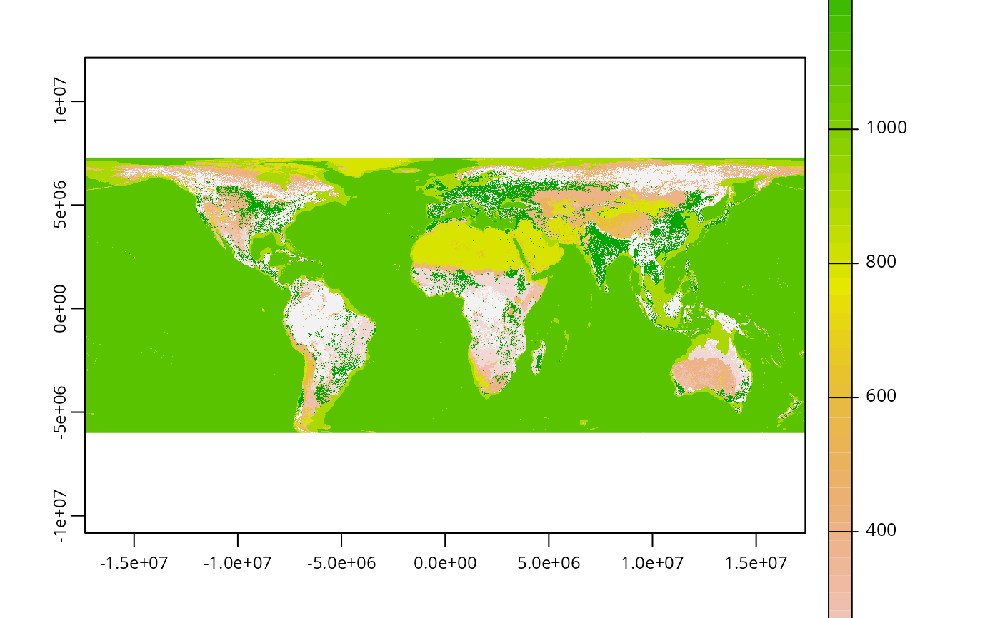

R/get_global_habitat_data.R
get_global_habitat_data.RdImport habitat classification data produced by Jung et al. (2020a). If data are not available locally, they are downloaded from the Zenodo Digital Repository (Jung et al. 2020b).
get_global_habitat_data(
dir = tempdir(),
version = "latest",
force = FALSE,
verbose = TRUE
)| dir |
|
|---|---|
| version |
|
| force |
|
| verbose |
|
A terra::rast() object containing the level 2 habitat
fractional coverage data.
These data are available at the 1 km \(\times\) 1 km resolution.
Each layer corresponds to a different habitat type, and each pixel
denotes the fraction of the pixel that contains a given habitat type.
Note that pixel values are scaled to between 0 and 1000, such that
a value of 0 indicates 0% coverage of a habitat type, and a value of
1000 indicates 100% coverage of a habitat type.
Jung M, Dahal PR, Butchart SHM, Donald PF, De Lamo X, Lesiv M, Kapos V, Rondinini C, and Visconti P (2020a) A global map of terrestrial habitat types. Scientific Data, 7:1--8. Available at https://doi.org/10.1038/s41597-020-00599-8.
Jung M, Dahal PR, Butchart SHM, Donald PF, De Lamo X, Lesiv M, Kapos V, Rondinini C, and Visconti P (2020b) A global map of terrestrial habitat types (insert version) [Data set]. Zenodo Digital Repository. Available at https://doi.org/10.5281/zenodo.4058819.
# \dontrun{
# define persistent storage location
download_dir <- rappdirs::user_data_dir("aoh")
# create download directory if needed
if (!file.exists(download_dir)) {
dir.create(download_dir, showWarnings = FALSE, recursive = TRUE)
}
# download and import habitat data
habitat_data <- get_global_habitat_data(download_dir, version = "latest")
# preview data
print(habitat_data)
#> class : SpatRaster
#> dimensions : 20039, 40077, 59 (nrow, ncol, nlyr)
#> resolution : 0.008983153, 0.008983153 (x, y)
#> extent : -180.009, 180.0088, -90.00835, 90.00505 (xmin, xmax, ymin, ymax)
#> coord. ref. : lon/lat WGS 84 (EPSG:4326)
#> sources : iucn_habitatclassification_fraction_lvl2__100_Forest__ver002.tif
#> iucn_habitatclassification_fraction_lvl2__101_Forest Boreal__ver002.tif
#> iucn_habitatclassification_fraction_lvl2__102_Forest - Subarctic__ver002.tif
#> ... and 56 more source(s)
#> names : 1, 1.1, 1.2, 1.3, 1.4, 1.5, ...
# plot data
plot(habitat_data)

# }